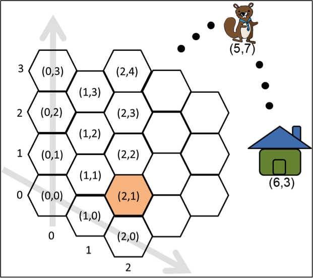
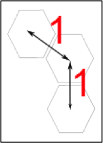

六角形漫遊（進階）
海克薩剛國的海貍特別喜歡六角形，因此他們將居住的土地劃分成數個六角形城市。每一個城市都按照圖A的方式編定座標（座標 (k, 0) 會在 (k−1, 0) 的右下方），並且設定兩個相鄰的城市距離為1單位長（如圖B）。
有一個小海貍目前位在城市 (2, 1)的位置，而他要前往城市（5, 7）找他哥哥，再一同返回位在城市(6, 3)的家。請問小海貍路程的最短距離是幾單位長？

圖Ａ

圖B
海克薩剛國的海貍特別喜歡六角形，因此他們將居住的土地劃分成數個六角形城市。每一個城市都按照圖A的方式編定座標（座標 (k, 0) 會在 (k−1, 0) 的右下方），並且設定兩個相鄰的城市距離為1單位長（如圖B）。
有一個小海貍目前位在城市 (2, 1)的位置，而他要前往城市（5, 7）找他哥哥，再一同返回位在城市(6, 3)的家。請問小海貍路程的最短距離是幾單位長？